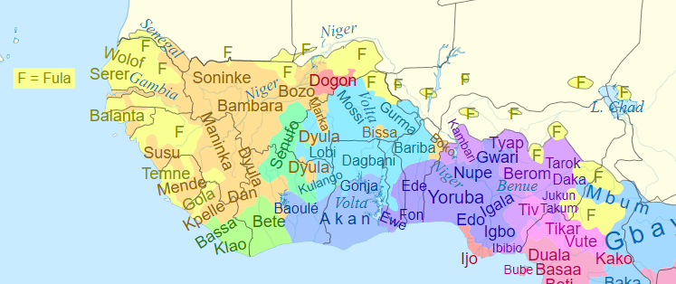
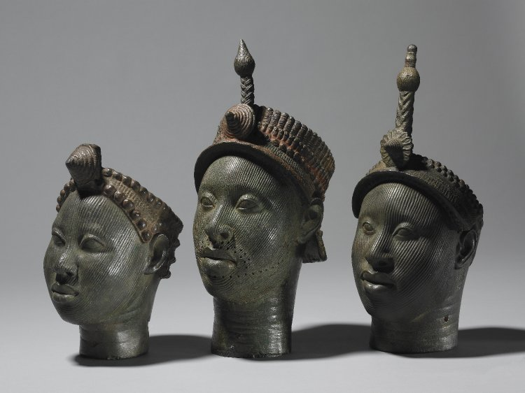
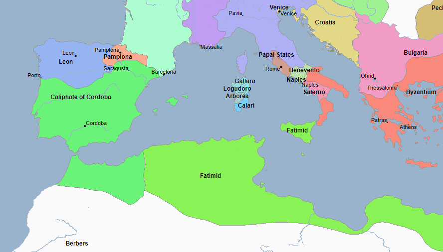
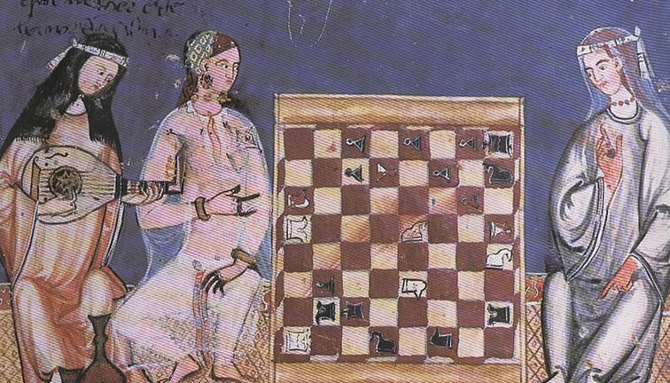
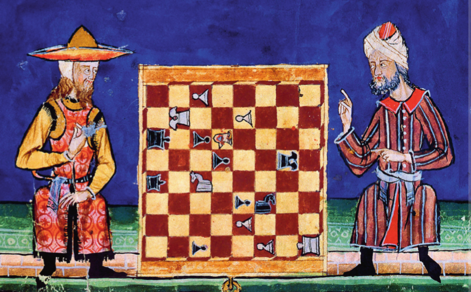
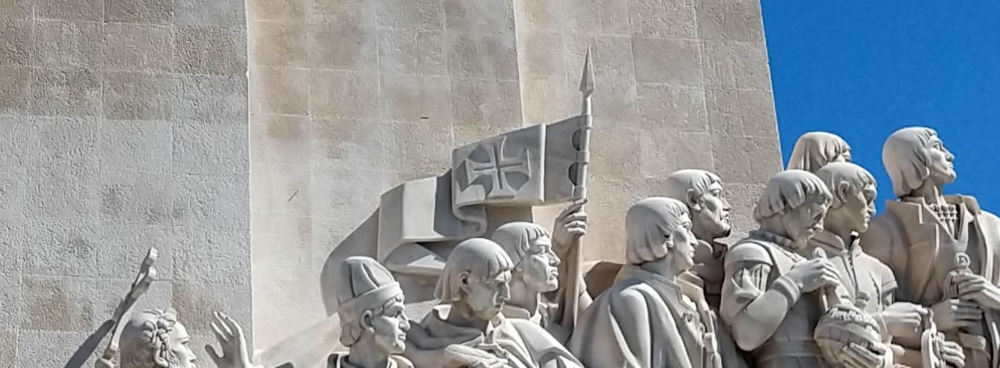

🦀 Kalungas: A Guiné
🎭🎭🎭
Kalungas: A Guiné
🦀 Kalungas: A Guiné
🎭🎭🎭
A Guiné. Recorte do mapa do mundi de Cantino (1502).
A praia foi um dia um local que cumpria o papel de conexão com os orixás e com os deuses de toda aquela gente. De uma diversidade imensa, o litoral da Guiné era habitado por diferentes povos que dominavam as florestas locais e o deslocamento ao interior através dos rios. Alguns grupos com organização política mais próxima a dos europeus tiveram uma maior representatividade nos mapas e ali se perpetuaram para sempre: reino do Mali, reino do Benin, reino de Ifé, entre outros. Ali se falava iorubá, igbo, fula, zulu e outras tantas línguas.
Recorte de mapa dos grupos linguísticos atuais da região da Guiné.
Um outro povo que sempre estava em contato com essa gente, realizando comércio e alianças, era o povo que praticava o islã. E de fato, muitas dessas comunidades subsaarianas (ou seja, ao sul do deserto do Saara) eram muçulmanas. Em contato com os bérberes, povos andantes do deserto, era possível ter acesso à rede comercial do Mediterrâneo.
Sentado sobre o império Mali, Mansa Musa é representado segurando uma pepita de ouro no atlas catalão de Abraão Cresques (1375).
A Guiné, região rica em minérios, era uma importante fornecedora de ouro, prata e diamantes para os povos pós-romanos (aqueles reinos que se partiram depois da queda do império romano). De fato, um rei do império Mali, de nome Mansa Musa e que viveu entre os séculos 13 e 14, carrega o título de homem mais rico da história humana, uma vez que o ouro tão comum no seu reino tanto valia para os outros povos. Esse ouro era objeto de transação entre os povos da Guiné, os atravessadores do deserto, a Europa e a Arábia.
Esculturas do povo de Ifé datadas entre os séculos 14 e 15. Hoje, Ifé é uma cidade da atual Nigéria.
Eis que na praia, local de contato com o outro mundo*, surgem homens em grandes barcos molestando esses povos.
A palavra kalunga, que significa praia, também é o nome dado ao local habitado pelos deuses ovimbundos, povo que habitava o litoral sudoeste do continente africano. A praia é uma analogia natural desse povo ao outro mundo, o mundo das divindades.
🛳️🛳️🛳️
Os assaltos nas praias continuaram. Sequestros, raides*, ameaças, furtos e todo assédio que a historiografia tem preferência por omitir. Essa gente dos grandes barcos queria mesmo, queridos leitores, roubar todos os povos do litoral porque era mais negócio do que depender dos bérberes do deserto: pelo mar era mais barato e mais rápido. A ganância por mais mercadoria a qualquer custo deixa claro que o empreendimento de assalto precisaria se formalizar.
* Raide é uma palavra nova que aprendi que significa incursão rápida no território inimigo pra tocar o terror.
E o que era estranho é que para o povo comum entre os igbos, ifés, iorubás e outros, esses marinheiros assaltantes eram muçulmanos! Por quê uma gente que manteve relação comercial tão bem passaria a tratar o povo da Guiné de tal maneira? Agora, o que contrariou a interpretação dos locais foram as constantes cruzes por todo lado: na costura das velas*, na espada, nos adereços desses marinheiros. Já para os mais entendidos, era óbvio. Essas pessoas não eram muçulmanas, essa cruz representava a fé cristã. E mais, esses homens desempenhavam uma atividade de cruzada: eles faziam parte de uma ordem de cavaleiros templários.
* Os navios que chegam à Guiné eram navegações mais simples, com velas menores, porem mais robustas do que as embarcações comuns na época.
A cruz da "Ordem de Cristo" estampava as velas desses barcos que assaltavam o litoral da Guiné. Recorte do livro de Lisurte de Abreu (Séc. 16).
Com o tempo, chega a informação sobre quem são esses homens. De fato, a Ordem de Cristo havia continuado o serviço iniciado na Arábia, quando exércitos de cristãos armados moveram-se até a Arábia para tomar as terras dos muçulmanos e fazer prosperar os negócios de Veneza. Ora, também é de conhecimento dessa época que esses cavaleiros de Cristo haviam sido perseguidos e a "ordem dos templários" extinta... na França!
Esses alienígenas da cruz vermelha de Cristo que pisavam na praia vinham de algum outro lugar, digladiando-se com quem manifestasse fé contrária a seu Cristo. Empolgados com a conquista do seu território de origem, a península ibérica, esses homens assumiram um nome diferente, não mais se chamariam templários mas Ordem de Cristo, porque assim o papa podia auxiliar sem interferir nos affaires políticos franceses, contrários a existência dessa organização militar.
A configuração política do Mediterrâneo no ano 1000: muçulmanos já ocupavam a península por cerca de 300 anos.
Fugindo da perseguição no resto da Europa, esses templários se esconderam pela península ibérica. A então nova Ordem de Cristo invadiu o califado de Córdoba pelo norte e ao longo dos anos foi tomando a península pouco a pouco. Fato muito ignorado pela educação básica do Brasil, e provavelmente, pela educação do resto do mundo, as cruzadas continuaram o estupro do território muçulmano, rasgando a terra em nome de Jesus, e estabelecendo o poder político sobre os povos da península e moldando em condados o que alguns historiadores consideram como o germe dos estados-nação. Era literalmente uma atualização das cruzadas praticadas alguns anos antes contra o Oriente Médio, o que é curioso porque se você parar para pensar, nossa cultura entende como cruel aquelas histórias de cavaleiros cristãos sendo intolerantes contra árabes no território invadido do Oriente Médio. Mas no caso da península ibérica... não. É como se aquele território fosse naquele tempo e fosse até hoje ainda considerada como terreno de divino direito cristão, e que sua origem não é questionada ou recontada, porque o assombro da origem daqueles povos considerados tão "de primeiro mundo" é o mesmo que construiu nossa história. O domínio cristão conquistado à espada, cruz e sangue.

Muçulmano e cristão dividem a execução de uma das "cantigas de Santa Maria", compilado de canções populares da península publicadas por um rei cristão espanhol. A tolerância dos povos muçulmanos a outras religiosidades é um tema muito discutido pela historiografia hoje. Há também uma resistência ocidental conservadora que insiste em enquadrar os praticantes do islã como indivíduos ortodoxos (tanto os atuais quanto os daquela época).
Portugal atual, de raiz católica, está 200 anos distante de superar o período de existência do califado e ainda hoje vive, assim como nós recifenses, a imposição forçada desse regime que emana da interpretação ou de uma variação da cultura cristã. Indo mais fundo, a motivação da igreja católica apostólica romana nunca foi de salvação mas de defesa da hegemonia econômica dos seus, atravessando feudalismo e capitalismo, e essa nossa percepção do amor real das palavras de Cristo é só, e somente só, o verniz que nos faz engolir tal controle. Como uma manifestação desse entendimento da igreja de que precisava haver controle cultural das populações, a Ordem de Cristo retomou os nomes dos tempos em que os romanos ocupavam as terras, em uma tentativa de resgate de um passado que nunca existiu, de um povo que ali viveu a mais de mil anos antes e por cerca de apenas 300 anos! E assim, essa milícia cristã fundou dentre outros reinos, o reino de Portugal.
Duas mulheres muçulmanas jogam "al-jadrez", enquanto uma mulher cristã toca um instrumento. As vestes da muçulmana da esquerda são trajes típicos da identidade portuguesa atual, um povo que reconhece suas influências árabes, mas que se assume como sendo 'naturalmente' cristão.
Após conquistar a península, a cruzada continuou para além do mar. Com o auxílio do financiamento de Veneza e Roma, e apropriando-se do conhecimento arquitetônico, militar, médico, astronômico e matemático que o povo do califado de Córdoba dominava (assim como o povo muçulmano em geral), o exército católico atinge um bum tecnológico que o permite chegar a praias um pouco mais distantes, como a costa da Guiné. Importante notar que os portugueses alcançam essa região enquanto ainda havia guerra na península ibérica.
Judeu e muçulmano em uma partida de "al-jadrez". Conviviam no califado comunidades cristãs, muçulmanas e judias por setecentos anos, seguidos pelo domínio cristão com a "reconquista" que, como fato ao longo da história, perseguiu e exterminou os outros demais: cruzadas, escravidão mercantil, inquisição, imperialismo e holocausto, para deixar fresquinho na memória.
O apoio financeiro da igreja pavimenta uma estrada que facilita um caminho até as Índias. Os comerciantes venezianos, genoveses, florecianos e outros, visando um acesso às mercadorias que do oriente vinham, depois do fracasso na manutenção das invasões das cruzadas, perdidas aos otomanos, os mesmos investidores da igreja utilizam-se dos portugueses (e outras nações) como cães de caça na travessia deste outro caminho, o contorno da África. Em busca de especiarias que não necessariamente são as hindus, esses navegadores da Ordem de Cristo encontram acesso aos mercados que os muçulmanos realizavam negócios, encontrando na Guiné a pimenta, o couro, o ouro... e gente.
🙏🙏🙏
De volta as praias da Guiné, as comunidades, assim como na América, possuiam seu próprio ritmo de relações sociais. Ali os mecanismos da vida em sociedade se desenvolveram normalmente, como em todo o globo onde os humanos puderam se estabelecer. Comunidades rivais comumente mantinham cativos umas das outras: pessoas da outra comunidade capturadas e obrigadas a trabalhar enquanto não recebiam pagamento de resgate. O mesmo acontecia na Europa, cristãos sequestravam muçulmanos nas suas praias, liberando seus trabalhadores reféns, ou cativos, mediante pagamento. Muçulmanos faziam o mesmo nas praias cristãs. Tal prática é mais antiga do que a própria palavra, cunhada pelos romanos, o captivus é o prisioneiro. Mais antiga do que o vocábulo também é o sclavus, já recorrente nas escrituras bíblicas, o escravo* na antiga Roma era frequentemente um eslavo (daí a origem da palavra).
* Diante de observação sob lentes atuais acerca do passado, e negando a ideia perpetuante ainda hoje de que o homem nasce escravo e serve apenas e exclusivamente a esse propósito, utilizo nos textos a palavra escravizado. Corrente cada vez mais usada, entende-se que nenhum humano nasce com essa marca que retira o mínimo da dignidade que o torna um ser humano, mas que a pessoa é socialmente marcada por esse conceito puramente virtual. O ser humano nasce pessoa social, e outra sociedade o faz escravizado.
A origem da prática de escravidão e cativeiro é difícil de se traçar. Até do outro lado do Atlântico essa forma de relação social era praticada. O oferecimento e abuso do corpo alheio no sanamento de suas "dívidas" e a ética sobre esse mecanismo, definitivamente rechaçado hoje, é uma discussão sociológica a parte. Aqui eu vou me ater a inovação cristã portuguesa.
Primeiro com assédios, depois com corsários* e finalmente estabelecendo guarda em terra firme. Ao acessar o mercado guineano em busca de especiarias e escravizados, o negócio operado com a mais avançada tecnologia disponível, tanto levava mercadoria e escravizados para a Europa quanto descobriu que poderia operar as trocas dos locais da Guiné, levando escravizados de uma praia a outra.
* O corsário é o pirata formal, seu trabalho é pago e regulado pelo rei. Já o trabalho do pirata é ilegal.

As correntes da costa da Guiné: por cima vai pro leste, por baixo para o oeste, com direito a retornos no meio do caminho.
Do Senegal até o Benin, onde o litoral faz curva e a selva continental se acentua, a Guiné é cortada por muitos rios. Os assaltos desses portugueses tentavam entrar subindo os rios, mas não conseguiam se estabelecer. Repelidos pelos povos dali ou sofrendo com a barreira epidemiológica da Guiné, assunto para um outro texto, os portugueses conseguem apenas fixar-se na praia. A partir de carrascos locais, trabalhando para os portugueses, eles conseguem controlar o mercado de escravizados.
A partir do recém estabelecido forte de São Jorge da Mina (hoje cidade de Elmina, em Gana), os iorubás acorrentados têm conhecimento do que se armava. Homens, mulheres, idosos e crianças capturadas por mais de oito meses em prisões no interior e agora levados à costa da Mina. Esses iorubás, ifés, igbos, beninenses e quem mais fosse feito cativo seriam levados à fazendas de açúcar em ilhas dentro das kalungas. Longe de suas famílias e sofrendo a constante humilhação dos milicianos de cristo e seus capachos, os relatos do trato dessas pessoas em São Jorge da Mina são uma das coisas mais desumanas já registradas.
Tais fazendas em ilhas remotas da costa africana (Cabo Verde, Madeiras, Canárias, Açores etc) estavam sendo empreendidas pelos mesmos venezianos, genoveses, alemães e outros financiadores das cruzadas portuguesas. Verdade seja dita, as primeiras voltinhas de barco pelo oceano Atlântico foram pilotadas por comandantes de Veneza. Como dito, os venezianos operaram a transferência desse conhecimento aos portugueses cristãos, cujos estudos foram desenvolvidos na escola naval de Sagres. E essas fazendas receberam milhares de pessoas escravizadas. Até 1475, foram enviados às ilhas e à Europa 15 mil pessoas escravizadas de acordo com o Slave Voyages Database.
Detalhe do monumento aos descobrimentos em Lisboa. O povo português ainda hoje se apresenta como cristão por natureza, homem branco desde sempre. A ereção de tal construção a esse orgulho mascara quem realmente são e disfarça os símbolos de perseguição a outros povos.
Voltando a discutir os símbolos, a cruz da Ordem de Cristo que estampava as velas desses navios tumbeiros* era a mesma cruz que estampava o brasão da escola de Sagres. Era a mesma cruz do escudo do soldado templário, que agora escravizava em nome de cristo, como será detalhado em próximos textos. É também a cruz de Vasco da Gama. E talvez, essa cruz esteja em outros tantos lugares, carregando o orgulho daqueles que operaram as cruzadas contra os povos muçulmanos, contra os povos da Guiné, do Congo e do Brasil e operam até hoje.
* Tumbeiro, como eram chamados no Brasil escravagista esses navios, dada a quantidade de mortos que se amontoavam nos porões ao longo da travessia do oceano.
Fim da Parte 1
Gente obrigado pelo interesse vocês são tudooo. Essa fase, como eu disse, tem sido a mais difícil de escrever, não apenas porque é pesado mas também porque é um contato com a origem de muitos dos meus amigos, familiares e provavelmente meu também. Essa é uma das raizes propositalmente apagadas do Brasil e seu resgate contribui ao reconhecimento da sociedade como ela realmente é.